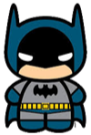

CURRICULUM VITAE DE BRUCE WAYNE
Datos personales
Nombre completo:
Bruce Wayce
Fecha de nacimiento:
01/05/1939
Lugar de nacimiento:
Gotham City
Formacion academica
1956-1961
Universidad del espantapájaros Licenciatura en aeronaútica
1952-1956
Secundario Gotham Bachiller con especialización en trucos
Experiencia laborar
1975-1985:
Desocupado Sin trabajo porquer se me rompió el batimovil
1965-1975:
Cazavillanos y demás chusma Atrapé a Gatubela a joker a Victor Fries lo dejé porque se me congeló la capa
1962-1965:
Aprendiz de superhéroes Hice pasantía con Superman. Opté por usar mascara porque no pude aprender a peinarme el rulo